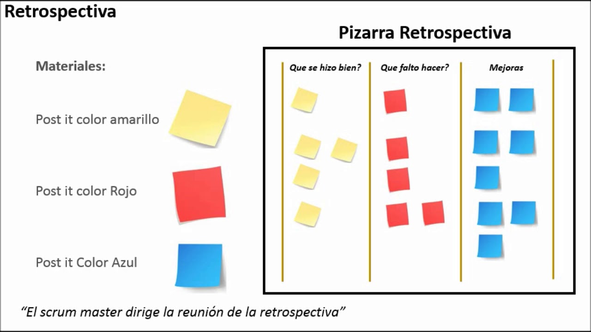
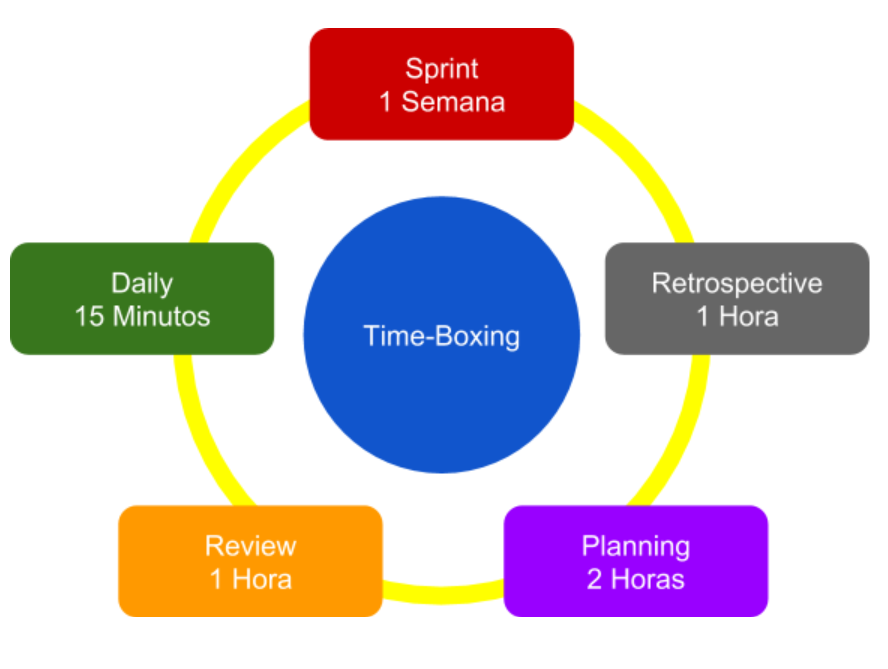

Integrantes


Crear una plataforma que asista al proceso de solicitud de la libreta Militar encargado por el comando de reclutamiento y control de reservas del ejército nacional de Colombia.
Anteriormente a las nuevas políticas de gobierno digital se aplicaban políticas de gobierno en línea que significaron los primeros pasos para la transformación de un modelo arcaico de poca participación ciudadana, de largas filas, burocracia y papeleo a un modelo cada vez más congruente con las necesidades tecnológicas de una nueva era donde los dispositivos digitales son cada vez más necesarios, debido a esto, el estado dio un gran paso al reconocer el uso de las tecnologías de la información y las comunicaciones TIC como instrumentos para aumentar su eficiencia en términos administrativos, de participación y empeoramiento ciudadano y de servicios prestados por sus diferentes entidades. Pero para seguir con la meta de un gobierno totalmente digital es importante entender que no solamente se trata de automatizar procesos o atender los trámites y servicios de la ciudadanía, ahora más que nunca es de gran importancia generar valor público por parte de todos los actores que construyen y aportan a lo publico en un entorno de confianza digital para lograr edificar ciudades más inteligentes, por eso es necesario contar con entidades y ciudadanos más competitivos, proactivos e innovadores. También es importante entender que el hecho de cambiar las políticas de Gobierno en línea a Gobierno Digital no implica que se deba comenzar de nuevo ya que Gobierno Digital da continuidad a estas implementaciones agregando nuevos aspectos.
El proyecto se alinea con las políticas de Gobierno digital porque busca cumplir con los siguientes aspectos:
Al crear la plataforma se busca que la entidad sea más accesible para todos los ciudadanos, que este siempre disponible salvo algún tipo de mantenimiento y tenga capacidad de respuesta a los cambios de las necesidades del ciudadano y las políticas nacionales. Esta plataforma se da como respuesta a una ciudadanía que cada vez tiene mayor acceso a las herramientas digitales que les permiten interactuar con el estado.
La plataforma servirá para proporcionar la información requerida a la entidad en el proceso de toma de decisiones que permitan anticiparse a la prestación de servicios en términos de mejora para la plataforma o de utilización de tecnologías emergentes, para eso la plataforma permita la participación de los usuarios en decisiones como:
Por medio de la plataforma se busca que la ciudadanía tenga mayor interacción y apoderamiento con las políticas del estado al incentivar en la ciudadanía el uso de los medios digitales para la identificación de problemas y posibles soluciones.
La plataforma permitirá mayor acceso por parte de la ciudadanía al servicio de trámite de solicitud de la libreta militar, con este fin se busca eliminará las filas y el papeleo al realizar todo el trámite de manera digital y de esa manera asegurar:
La plataforma fortalecerá la interacción del estado con el ciudadano por medio de herramientas digitales y estimulará el uso de los mismos al ofrecer un servicio más sencillo, seguro y que permita el dialogo permanente.
El manual de gobierno digital se planteó 5 propósitos para cumplir con éxito sus políticas que estarán contenidas en la plataforma de la siguiente manera:
Como se estableció en el primer propósito de las políticas de gobierno digital “Servicios Digitales de confianza y calidad” la plataforma contara con los siguientes servicios básicos:
Dirección de reclutamiento
Personal de reclutamiento del ejército nacional
Implementar un registro de acceso virtual (formulario) que permita a la ciudadanía registrar un usuario único y personal en el cual se desarrollaran todos los procesos de solicitud de la libreta militar obligatoria.
Desarrollar a partir de un lenguaje de programación un aplicativo web, el formulario inicial de inscripción de usuario (tipo de documento(*), Número de documento(*), Nombres(*), segundo nombre, Apellidos(*), segundo apellido, correo electrónico, contraseña), siendo el tiempo de desarrollo 1 semana para entrega al stakeholder como entrega inicial del proyecto de Ingeniería de Software 2, con la siguiente división de trabajo:
Registro de Inscripción de usuario A1, diagrama, (key performance indicator KPI), roles (desarrolladores, usuarios de prueba, director, stakeholders, documentadores), Actividades (), macroproceso.
Durante el desarrollo del proyecto se utilizara la metodología SCRUM, se escoge esta metodología ya que para la forma en la que va a desarrollar el proyecto es necesaria una comunicación constante con el cliente y un constante desarrollo de la aplicación, con la flexibilidad de adaptación dependiendo de los requerimientos del cliente a través del tiempo.
A continuación se describirán cada una de las fases de los procesos que se tendrán en cuenta durante el desarrollo de la metodología SCRUM.
Product-Backlog:El Product Owner creará el Product-Backlog, en un archivo excel, donde se describirán todas las historias de usuario que se realizarán durante el proyecto y lo irá retroalimentando a medida que se realice cada uno de los sprint.
Sprint-Backlog: El Product Owner creará el Sprint-Backlog, en un archivo excel, donde se describirán todas las historias de usuario que se realizarán durante el sprint.
Scrum-Board: El Scrum Master creara el Scrum-Board, en Trello, donde se especificarán las historias de usuario comprometidas en el Sprint-Backlog, para que cada integrante del Team Scrum las desarrolle.
Planificación de Lanzamiento:Se realizarán entregas al finalizar cada sprint (los cuales tendrán un tiempo de duración de 1 semana) los días lunes al Stakeholders en el salón de clases; es decir, se tendrá un total de 14 sprints en todo el proyecto.
En la reunión de planeación (Planning), que se realizará todos los viernes a la 1:00 pm, en la terraza del CyT (edificio de Ciencia y Tecnología), con una duración de 2 horas, donde el Product Owner entregará las historias de usuario, previamente priorizadas en el Product-Backlog, al Team Scrum y se utilizará la técnica de Planning poker para realizar la estimación de las historias de usuario, donde se asignan los puntos de historia basados en la serie de fibonacci.
Cada integrante del Team Scrum se comprometerá con una o más historias de usuario y se identificará las tareas.
Product Owner realizará el Sprint-Backlog conforme a lo definido por el Team Scrum. El Scrum Master restablecerá el Scrum-Board, en Trello, de acuerdo a las historias de usuario que se acordaron para el sprint.
Cada integrante del team scrum se encargará de mover la historia de usuario que tiene comprometida en el Scrum-Board hasta llegar al estado “Hecho” a medida que va creando los entregables.
Los Dailys se realizarán con una duración no mayor a 15 minutos diarios, por medio de Whatsapp a las 7:00 pm; donde el Team Scrum responderá las siguientes preguntas:
El Product Owner refinará el Product-Backlog a medida que se va moviendo el Scrum-Board y se requiere crear o definir alguna historia de usuario para el siguiente sprint.
Las reuniones de revisión (Review) se realizarán todos los viernes a la 11:00 am, en la terraza del CyT (edificio de Ciencia y Tecnología), con una duración máxima de 1 hora, en la que el Product Owner aprobara o rechazara las historias de usuario que se comprometieron en el sprint.
La reunión de retrospectiva (Retrospective) se realizarán todos los viernes a la 12:00 m, en la terraza del CyT (edificio de Ciencia y Tecnología), con una duración máxima de 1 hora, en la que el Team Scrum, junto con el Scrum Master, realizarán una dinámica para identificar cómo nos fue en el sprint. Inicialmente se realizará la dinámica del Barco, dirigida por el Scrum Master, donde cada persona por medio de post-it colocara lo que le parece que fue bueno, lo que fue malo o alguna amenaza que ocurrió en el sprint.

Luego de que cada persona ubique las tarjetas en el tablero se clasificarán por categorías para encontrar las cosas que la mayoría consideran que se deben revisar y realizar acciones de mejora. El principal objetivo es que no se vuelvan a presentar en los futuros sprint.
La fecha tentativa de entrega del producto, totalmente terminado al Stakeholder es el 15 de Julio de 2019. El mismo día que se realice la entrega total del producto se realizará una retrospectiva del proyecto, similar a las retrospectivas de los sprint.

| ID | ExistePNI | Descripción | Estimación poker planning | Prioridad | Estado Desarrollo | Sprint | Responsables (Siglas trello) | Pruebas QA | Comentarios | Entrega |
|---|---|---|---|---|---|---|---|---|---|---|
| PBI101 | NO | Implementación estructura BD | 2 | Alta | Pendiente | 1 | CO, CP, I, S | |||
| PBI201 | NO | Interfaz de registro | 1 | Media | Pendiente | 1 | MG | |||
| PBI202 | NO | Interfaz de inicio | 1 | Media | Pendiente | 1 | DN | |||
| PBI203 | NO | Interfaz de perfil de usuario | 1 | Media | Pendiente | 1 | Co |
El PBI (product backlock item) id esta identificado de la siguiente manera:
| Entregable | Descripción | Criterio |
|---|---|---|
| Interfaz de Inicio | Interfaz donde se encuentre el index inicial de la página |
La interfaz debe entregarse con dos botones (iniciar sesión, registrarse) debidamente identificados con los nombre y, acompañados de los input con sus indicadores donde ingresar la informacion (correo y contraseño) Tiene que estar diseñada de forma que las operaciones antes mencionadas se puedan hacer eficientemente cuando la logica del negocio se implemente. Esta información tiene que estar debidamente centralizada en la pagina y visualizable en almenos un navegador |
| Interfaz de Registro | Interfaz donde el usuario procederá a registrar la información de ingreso al servicio. |
La interfaz debe tener los siguientes indicadores con sus debidos inputs: en nombres, apellidos, tipo de documento, numero de documento, correo y contraseña, centralizada y visualizable en almenos un navegador. Tiene que estar diseñada de forma que las operaciones antes mencionadas se puedan hacer efectivamente cuando la logica del negocio se miplemente. Adjunto deberá llevar el boton de validación (validar) y cancelar registro (cancelar). |
| Interfaz de Perfil | Interfaz donde se podra observar los datos personales que el cliente ha registrado |
La interfaz deberá mostrar Nombres, Apellidos, numero de cédula, y correo electrónico. Deberá tener un botón de editar información y cancelar. Tiene que estar diseñada de forma que las operaciones antes mencionadas se puedan hacer eficientemente cuando la lógica del negocio se implemente. Toda la informacion Deberá estar centralizada y visualizable en almenos un navegador. |
La base de datos deberá poder agregar o registrar la información de un usuario ingresando todos los campos de información requeridos: Nombres, apellidos, tipo de cédula, número de cédula, correo y contraseña; basado en el modelo de entidad relación presentado en la segunda entrega del trabajo. Está debera tener las tablas definidas en el diagrama de modelo de datos (entidad-relación) y los atributos de ellas tal como está definido en el modelado de datos físicos. Por ahora no se tomara en cuenta tiempo, rendimiento o eficiencia en el registro, solo la implementación del modelado de la base de datos.
| ID | Descripción | Poker planning | Prioridad | Estado | Sprint | Responsables (Siglas trello) | Pruebas QA | Comentarios | Entrega |
|---|---|---|---|---|---|---|---|---|---|
| 102 | CRUD Entidades | 2 | Media | Proceso | 2 | CO, CP, I, S | N/A | ||
| 207 | Unificar FrontEnd | 1 | Alta | Pendiente | 2 | CO, DR, DN | Pendiente | ||
| X02 | Unir Back-Front | 2 | Alta | Pendiente | 2 | DR, DN, JM, MA | N/A | ||
| X01 | Readme | 1 | Baja | Hecho | 2 | DR | Pendiente | ||
| 302 | Actualizar Página | 2 | Baja | Pendiente | 2 | JM | Pendiente | ||
| 303 | Motor de Proceso | 5 | Baja | Proceso | 2 | A, CO, LA | Proceso | Investigación | |
| 304 | AWS | 3 | Media | Proceso | 2 | F, CP, I | Proceso | Investigación | |
| 301 | Documentación | 5 | Alta | Proceso | 2 | JG | Proceso | ||
| 201, 202, 203 | Inicio, Registro, Perfil | 1 | Alta | Pendiente | 2 | CO, DN, MG | Proceso |
| Entregable | Descripción | Criterio |
|---|---|---|
| Inicio, Registro, Perfil | Iteración de mejorda de las interfacez inicio, registro y perfil de usuario |
|
| Unir back-front | Unir la BD realizada con las interfacez de usuario |
|
| Unificar front-end | Definir el estilo de la plataforma |
|
| Documentación | Trabajo del product owner |
|

| ID | Descripción | Poker planning | Prioridad | Estado | Sprint | Responsables | Pruebas QA | Comentarios | Entrega |
|---|---|---|---|---|---|---|---|---|---|
| X02 | Unificar Back y Front | 3 | Alta | Pendiente | 3 |
|
|||
| 204 | Vista de archivos | 2 | baja | Pendiente | 3 | Luis Avendaño | |||
| 204 | Vista academica | 2 | baja | Pendiente | 3 | Felipe Pineda | |||
| 204 | Vista Familiar | 2 | Baja | Pendiente | 3 | Cristian Ortiz | |||
| 106 | Formulario de archivos | 5 | Media | Pendiente | 3 | Juan Paez | |||
| X03 | AWS subir página | 2 | Baja | Pendiente | 3 | Michael Guerrero | |||
| 207 | Vista Home | 2 | Baja | Pendiente | 3 | Miguel Gomez | |||
| X04 | Motor de proceso | 2 | Media | Pendiente | 3 | Andres Chavez | Del tercer Sprint |
| Entregable | Descripción | Criterio |
|---|---|---|
| Unificar Back y Front | Unir CRUD de usuario con la interfaz de usuario | Hacer registro de usuario por medio de la interfaz |
| Vista de archivos | Interfaz de carga de datos personales del usuario |
|
| Vista academica | Interfaz de carga de datos academicos del usuario |
|
| Vista familiar | Interfaz de carga de datos familiares del usuario |
|
| Formulario de archivos | funcionalidad de la vista de archivos |
|
| AWS, subir página | Cargar página de presentación en AWS | Se pueda ver la página desde el servidor |
| Vista Home | Interfaz de datos del usuario después de iniciar sesión | Index de la plataforma con las opciones de consulta y solicitud de tramite (continuidad de tramite) |
| Motor de proceso | Motor de proceso de la tercera iteración | Diagrama presentable |